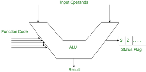

ALU

In computing, an arithmetic logic unit (ALU) is a combinational digital circuit that performs arithmetic and bitwise operations on integer binary numbers.[1][2] This is in contrast to a floating-point unit (FPU), which operates on floating point numbers. It is a fundamental building block of many types of computing circuits, including the central processing unit (CPU) of computers, FPUs, and graphics processing units (GPUs).[3]
The inputs to an ALU are the data to be operated on, called operands, and a code indicating the operation to be performed; the ALU's output is the result of the performed operation. In many designs, the ALU also has status inputs or outputs, or both, which convey information about a previous operation or the current operation, respectively, between the ALU and external status registers.
Signals
An ALU has a variety of input and output nets, which are the electrical conductors used to convey digital signals between the ALU and external circuitry. When an ALU is operating, external circuits apply signals to the ALU inputs and, in response, the ALU produces and conveys signals to external circuitry via its outputs.
Data
A basic ALU has three parallel data buses consisting of two input operands (A and B) and a result output (Y). Each data bus is a group of signals that conveys one binary integer number. Typically, the A, B and Y bus widths (the number of signals comprising each bus) are identical and match the native word size of the external circuitry (e.g., the encapsulating CPU or other processor).
An ALU is a combinational logic circuit, meaning that its outputs will change asynchronously in response to input changes. In normal operation, stable signals are applied to all of the ALU inputs and, when enough time (known as the "propagation delay") has passed for the signals to propagate through the ALU circuitry, the result of the ALU operation appears at the ALU outputs. The external circuitry connected to the ALU is responsible for ensuring the stability of ALU input signals throughout the operation, and for allowing sufficient time for the signals to propagate through the ALU before sampling the ALU result.
In general, external circuitry controls an ALU by applying signals to its inputs. Typically, the external circuitry employs sequential logic to control the ALU operation, which is paced by a clock signal of a sufficiently low frequency to ensure enough time for the ALU outputs to settle under worst-case conditions.
For example, a CPU begins an ALU addition operation by routing operands from their sources (which are usually registers) to the ALU's operand inputs, while the control unit simultaneously applies a value to the ALU's opcode input, configuring it to perform addition. At the same time, the CPU also routes the ALU result output to a destination register that will receive the sum. The ALU's input signals, which are held stable until the next clock, are allowed to propagate through the ALU and to the destination register while the CPU waits for the next clock. When the next clock arrives, the destination register stores the ALU result and, since the ALU operation has completed, the ALU inputs may be set up for the next ALU operation.